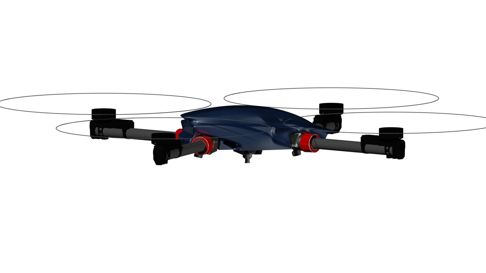

InSky Legal™
A compact high-capability professional UAV platform
Designed for payload, inspection, imaging, and specialized field operations.
Legal is InSky’s lead near-term commercial platform. It is designed to combine low structural weight, strong useful payload capability, and a broad mission envelope in a compact professional aircraft.

Key figures
Specifications and endurance
Empty weight9.8 kg
Ready-to-fly without payload14.6 kg
FAR Part 107 payload10.3 kg
Absolute maximum payload30 kg
30 kg payload12 min
20 kg payload18 min
10 kg payload32 min
5 kg payload44 min
Empty70 min
Operating framework
Capability beyond the standard threshold
Legal is designed with capability beyond the standard 55 lb U.S. small-UAS operating threshold.
In the United States, operations above that threshold require the appropriate regulatory exemption, including 44807 where applicable.

Commercial direction
Built for serious market validation
Legal’s early commercial path is centered on test validation, showroom and demo readiness, distributor and mission-fit conversations, and the conversion of serious interest into reservations.
Discuss a mission